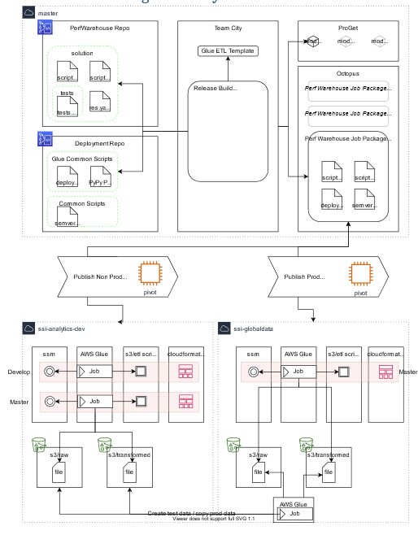

Designing a CI/CD-driven ETL platform for enterprise analytics (2020–2021)
In 2020 and 2021, I led the design and implementation of a custom deployment framework for AWS Glue as part of a big analytics project. At the time, AWS offered limited native support for continuous delivery of Glue jobs. I wanted to change how our data engineering teams worked—freeing them from manual deployment steps, enabling isolated testing environments, and allowing them to focus on building value rather than fighting infrastructure.
This post describes how we built a Glue deployment pipeline using TeamCity, Octopus Deploy, and CloudFormation, and how that framework enabled us to deliver complex, multi-stage ETL pipelines with confidence and speed.
We were orchestrating a multi-layered ETL system that pulled data from platforms like SQL Server, Workday, and Quest into Redshift through a series of transformations managed by AWS Glue. With more than a dozen stages in the pipeline— ranging from raw data ingestion to dimensional modeling—manual deployment wasn’t sustainable.
The development team needed a way to test changes safely without impacting other environments. We also had to manage deployments across a matrix of tenants: development, QA, training, and production, each requiring strict data separation and orchestration logic.
Our goal was clear: create a fully automated, environment-aware deployment system for Glue jobs that supported isolated feature testing, semantic versioning, and reproducibility across environments. And it had to scale.
Our CI/CD pipeline began with Git. Developers committed code to feature branches, and every push automatically triggered a TeamCity build. That build would run unit tests, lint IAM policies and YAML files, tag the release semantically, and package the artifacts for Octopus Deploy and ProGet. Once complete, the build handed off to Octopus for environment deployment.
Behind the scenes, the Octopus server used a PowerShell script to copy the Glue scripts into an S3 artifact bucket. It then deployed a CloudFormation stack, passing in the correct IAM roles and configuration to ensure only the required resources were provisioned.
CloudFormation stacks were the backbone of this process. Each one encapsulated everything needed to deploy a Glue job or workflow: the job definition, the scheduling triggers, the associated SSM parameters for configuration, and the tagging needed for cost tracking and resource governance. By keeping each deployment self-contained and declarative, we ensured consistency across environments and simplified rollback if needed.

A key innovation was our use of feature-specific environments, which allowed developers to test ETL logic
in isolation. When a developer began work on a ticket—for example, PW-5496—they could initiate the creation
of a dedicated environment. This cloned the current develop branch, spun up a Redshift schema named after the
ticket, loaded relevant data from S3, and deployed a complete set of Glue and Spark jobs, all uniquely named and tagged
to avoid collisions.
This process allowed engineers to iterate safely and see the full end-to-end impact of their changes without interfering with shared dev or QA environments. It also ensured that any configuration or job state was tied to the appropriate environment. Jobs could be resumed or debugged without ambiguity, and promotion to production followed a clear path through testing and governance.
Each feature environment took approximately two hours to provision, largely due to the deployment time required for Glue jobs. But the payoff was huge: complete confidence in the behavior of a new job before it reached master.
One of the core challenges in a system like this is maintaining proper separation of data and compute resources across environments. For example, our training environment needed production-like data, but without accessing the actual production tenants of upstream systems. ETL jobs needed to “know” what environment they were operating in—both for sourcing input data and for resuming partially completed jobs without cross-contamination.
We handled this by parameterizing all Glue jobs with tenancy and environment metadata, managed through SSM. Job names, Redshift schemas, and even S3 paths were generated based on environment context. In this way, the same job code could run across any environment simply by passing in the correct configuration.
Crucially, this logic wasn’t duplicated in every job. Instead, we centralized orchestration patterns, so tenancy awareness was built once and reused everywhere. That decision significantly reduced maintenance burden and made the system easier to extend as we added more jobs and more data sources.
To maintain production stability, we implemented strict gating mechanisms. No developer had IAM permission to deploy directly. All deployments were routed through Octopus, with production deployments requiring an RFC and approval by a Release Manager. This separation of duties gave us a clean audit trail and reinforced confidence in the release process.
Each sprint concluded with a release management meeting, during which we reviewed changes tagged for production. Deployments to training occurred early in the week, giving us time to verify integration before production rollout mid-week.
If I were building this system today, several new tools could simplify or even replace parts of the architecture.
AWS CDK offers a more maintainable alternative to raw CloudFormation. Glue Studio now supports job versioning and has improved support for orchestration workflows. GitHub Actions or GitLab CI could replace TeamCity for many organizations, providing tighter integration with source control. And Terraform—with its mature AWS provider—could simplify stack definitions and reduce some of the deployment overhead.
That said, in 2020 and 2021, these options were either immature or unavailable. What we built solved the right problem at the right time, and it did so in a way that scaled well and empowered our developers to move quickly without compromising safety or traceability.
This project taught me a lot about the intersection of data engineering, infrastructure-as-code, and developer enablement. By designing a deployment framework around Glue that put automation and environment isolation at the center, we turned what was once a fragile and manual process into something scalable, auditable, and developer-friendly.
For teams working with AWS Glue today, I’d encourage building with the same principles—even if the toolchain looks different now. The underlying goal remains the same: let developers focus on delivering insight, not wrestling with infrastructure.